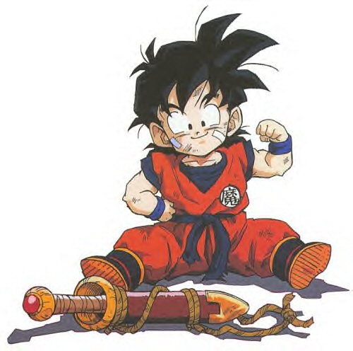

Son Gohan (孫 悟飯?), conocido como Son Gohanda en la traducción al español de España de la mayor parte de los episodios del anime (en la traducción española del manga mantiene su nombre original Son Gohan), es un personaje de ficción del manga Dragon Ball y del anime Dragon Ball Z y Dragon Ball GT. Es mitad Saiyajin y mitad humano. El nombre de Gohan es un juego de palabras entre la palabra "gohan" (御飯, comida, arroz en japonés) y el nombre de su padre, Son Gokú(孫悟空).
Niñez
A pesar de las quejas de Gokū, lo mandan a la escuela para que se convierta en científico, a los cuatro años. Después de la pelea de Gokú y Piccolo contra Raditz para salvarlo donde finalmente Gokū se termina sacrificando, Piccolo decide entrenarlo pese a la insistencia del pequeño de que quería volver con su mamá; pero, con el tiempo logra que se convierta en un guerrero fuerte y valiente a pesar de ser solo un niño y este hace que Piccolo, aunque este no lo demuestre, le tome mucho cariño. Este guerrero namekiano que fue en su día enemigo de Gokū, se convierte en un buen amigo y un estricto maestro del joven Gohan. El futuro guerrero admira a su maestro namekiano e incluso empieza a vestirse del mismo modo que este.
En el momento que llega Raditz a la Kame House, Raditz coge a Son Gohan que es el hijo de Gokū y lo rapta. Para que no se escape lo encierra en su nave. Cuando Gokū va a rescatarlo y empieza a perder la pelea, Son Gohan al ver a su padre sufrir, destruye la nave y le da un poderoso cabezazo a Raditz en el estómago, de más de 1,200 en nivel de ki ; números que marca en rastreador; pero, cuando Raditz cae, el pequeño va hacia su padre y su Ki vuelve a descender a sus niveles normales, pese a que su fuerza y sus poderes, cambian emocionalmente.
Cuando llega el momento para los guerreros Z de enfrentarse a los dos sayians Vegeta y Nappa, intenta luchar con valentía pero, debido a su corta edad, y viendo la situación, la cual es una de la que nunca habría pasado o imaginado, se asusta. Cuando Nappa le lanza un rayo de energía letal , Piccolo se lanza delante de Son Gohan para protegerle, muriendo en el acto. Ante la muerte de su mejor amigo y mentor, lanza a Nappa un 'Masenkō' que le podía haber destrozado si no se hubiese protegido.
Al llegar su padre, Goku le pide que se aleje lo más lejos posible, pero Gohan queriendo ayudar, termina involucrado en esta batalla luego de haberla abandonado. Más adelante después de que Vegeta se transformara e hiriera a Gokū, y tras que Vegeta volviera a su forma normal, Gohan es el que se ocupa de mantenerlo a raya. Cuando Vegeta expulsa su ki al máximo y todo parecía perdido para Gohan, le crece la cola, se transforma en Ōzaru (mono) y derrota a Vegeta tumbándose encima de él.
Cuando Krilin enseñó el control de una de las naves de los saiyajin a todos, planearon ir de viaje a Namek (ナメック星, Nameku-sei). Pero Gohan no podría ir, ya que su madre, no se lo permitiría. Tanto fue la insistencia de Gohan, que le gritó a su madre y esta no tuvo opción.
Durante el viaje a Namek, Gohan se vio postrado ante problemas inimaginables para él. Al llegar junto con Bulma y Krilin, todo parecía estar bien. Al empezar la búsqueda de las esferas del Dragón , tuvieron suerte en algo, lograron rastearlas pero solo hasta el punto en que se toparon con los hombres de Freezer. Estos hombres y su líder (Freezer), tenían deseos de dominar al universo gracias a las esferas del Dragón de Namek. Gohan no se decidió a darse cara a cara con Freezer, para no ver los problemas en que se involucraría. Gohan en algunas ocasiones, mostraba gran poder, a causa de su estado emocional [Furioso], pero al tranquilizarse no podría hacer más.
Bajo toda custodia y peligros en Namekusei, el Gran Patriarca, le despertó parte de su poder oculto. Pero, al reunirse con Vegeta, estando Krilin también, momentos antes Vegeta no había enterado que Gohan y Krilin, junto a Dende, un pequeño Namekiano, habían despertado a Porunga, el Gran Dios Dragón de Namekusei. Freezer ya iba tras Vegeta, y al encontrase todos, Krilin, Gohan, Vegeta, Freezer y Dende, el Patriarca muere y las esferas del Dragón terminan convertidas en piedra, Freezer al no haber pedida su deseo de inmortalidad, suelta ira de venganza, y acuerda pelea con Vegeta, y que luego, se vengaría asesinando a todos. Goku se estaba curando en una cápsula de curación en una de las naves de Freezer.
Cuando Freezer llega a su segunda forma y atraviesa a Krilin con su cuerno, Son Gohan estalla en ira y golpea violentamente a Freezer, lo lanza desde el cielo a una isla y le lanza cientos de ráfagas de energía. Pero Freeza sobrevive, y le dice que lo atacó muy bien, y Freezer lo toma de los pelos.Más tarde Freezer se transforma en su 3ª forma para derrotar a Piccolo en su estado de supernamekiano unido con Nail y cuando este esta apunto de morir Gohan lo salva obligando a Freezer a llegar a su forma definitiva. Al final Gokū con el estado de Super Saiyajin le derrota y le da la energía necesaria para huir del planeta namekusei que esta apunto de estallar.
Antes de la llegada de Cell, Gokū y Piccolo lo entrenaron fuertemente. Gokū sabía que podía ser más fuerte incluso que él. En el Habitación del tiempo Gohan logra convertirse en un Super saiyajin y crece hasta sobrepasar la estatura de Krilin. Después de un entrenamiento de 24 horas en la habitación del tiempo, Gokū como se lo promete antes de la batalla contra Cell, lo lleva a pescar, después de un rato llega krilin y juegan en el río. Y su madre cree que se transformó en un rebelde, por el color dorado y erizado de el cabello de su hijo.
En el torneo de Cell, Gohan no está a la altura de su rival. Cell trata de enfadarlo como sea, ya que Gohan, como excusa, decidió contar toda su ira al enfadarse, y Cell, acaba mandando a los Cell Jr , pero no es suficiente. Luego Cell le enfada destruyendo al androide A-16. La rabia provoca que se convierta en un Super Saiyajin 2, Gohan derrota a los Cell Jr. en menos de un santiamén, luego va a por Cell, lo golpea el repetidas ocasiones, Cell creyendo que lo podía vencer, desde el cielo le lanza un mega kame hame ha, pero Gohan es capaz de contrarrestar ese peligro lanzando otro Kame hame ha enorme lo que conlleva a que Cell quede destrozado. En ese momento Gokū le dice que lo destruya, pero su hijo dice que "¿Quieres que acabe con él? (se ríe) ¡Es demasiado pronto, papá! ¡Quiero jugar con él un poco más!". Cell expulsa a A-18 porque ya no le servía sin energía y vuelve a su transformación anterior. Ya en una notable desventaja, se hace explotar junto a todo el planeta, y gracias a una célula regeneradora se recupera. Gokū al ver tal situación, se tele transporta con Cell al planeta de Kaito , Cell explota y todos mueren ahí. En la Tierra Gohan llora porque cree que es por su culpa , De repente, aparece Cell, y le lanza un super rayo a Trunks. Vegeta sin poder controlarse, lo ataca con todo su poder, este no sufre daño alguno y le lanza otro super rayo a Vegeta, Gohan va lo más rápido que puede a defender a Vegeta, pero el rayo le da en el brazo y queda herido. Cell con el poder del sol le lanza un kame hame ha solar, Gohan SSJ2 le lanza un kame hame ha con su brazo derecho, y con el poder que le queda y la ayuda del resto de los guerreros Z, (especial mente su padre) por fin derrota a el temible Cell, quedando en ese instante el individuo más poderoso del universo y el único que pudo alcanzar(hasta ese momento) el Super Saiyajin 2.
Juventud
Gohan empieza la preparatoria en la escuela Orange Star High School. Él tiene buenas calificaciones en los exámenes y allí donde conoce a otros estudiantes, entre ellos a Videl quien en el futuro se convertiría en su esposa y madre de su hija. Al ser una época de paz no hay grandes oponentes con quienes enfrentrase, sin embargo se dedica a detener el crimen usando su transformación SSJ para evitar ser reconocido aunque posteriormente, consciente que era demasiado poder para enfrentar humanos y buscando como proteger mejor su identidad, pide a Bulma que le fabrique un disfráz para luchar contra los delincuentes de la ciudad, en este alter ego usa el nombre "Gran Saiyaman" pero Videl empieza a sospechar de él, descubriéndolo finalmente y comenzando a partir de este punto a actuar en conjunto.
Participó en el 25° Torneo de las Artes Marciales obligado por Videl, hija del "salvador del mundo" Mr. Satán, debido a que si no lo hacía, revelaría su secreto (su identidad secreta) a todos. En el Torneo, Kibito le pidió que se convirtiera en Super Saiya-jin, y Spopovich y Yamu subieron al ring y le robaron su energía, con un artefacto de Babidi.
En la nave de Babidi luchó ante Dabura, en una batalla aburrida cuando Dabura decidió detenerla. Intento combatir con Majin Boo, pero este lo derrotó fácilmente, y Gohan quedó inconsciente y con riesgo de perder la vida. Después fue llevado al planeta de los Kaiō Shin y fue entrenado por Rō Kaiō Shin, el que despertó al quebrar la espada Z. El antiguo Kaioshin, salido de la espada Z, le hace un ritual de 48hr. para liberar todo su poder, pero a las 20 horas, Gohan no soporta más estar ahí haciendo nada y de un grito de ira despierta la mitad de su poder oculto, más tarde termina el entrenamiento y va a por Buu. Con este poder incrementado se enfrentó a Majin Buu.El combate fue fácil, el poder de Majin Buu era muy inferior, pero luego este absorbió a Gotenks en SSJ 3 y a Piccolo y supero fácilmente los poderes de Gohan. Finalmente, fue absorbido por Majin Buu para evitar que Goku se pudiera fusionar con él. Luego es sacado junto con Goten, Trunks, Piccolo y el monstruo Boo por Goku y Vegeta; quienes lograron entrar al ser también absorbidos por majin Boo; más tarde, Gohan se casa con Videl, tienen una hija llamada Pan y se dedica a sus estudios. Se ve como al final de Dragon Ball Z, en el último torneo, ni siquiera participa, por lo que se puede deducir que se ha dedicado más a sus estudios que a su entrenamiento, volviéndose más débil de adulto que cuando era niño en modo Super Saija-jin 2 (como mencionado por Vegeta cuando se enfrenta contra Dabura, quien tenía el mismo nivel que Cell Perfecto). Es así que, la forma más poderosa de Gohan resultó tras obtener el poder místico de Ro-Kaioshin llamado "Gohan Definitivo" o Saikyō no Senshi es el Guerrero más fuerte sin contar fusiones ni absorciones, hasta superando a Goku Super Saiyajin 3 el cual poseía una cantidad de poder de 107.000.000.000 de ki hasta ese momento. Cabe destacar que en ese instante, Gohan fué el mas fuerte con un poder que sobrepasaba los 180.000.000.000 de ki.